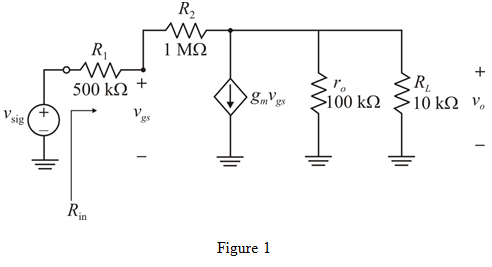
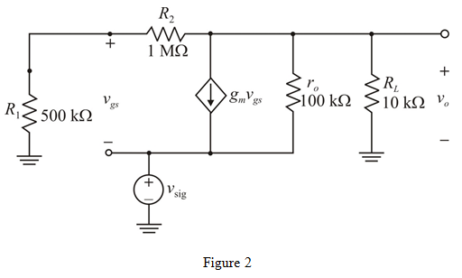

Apply Kirchhoff’s current law at the output node.
…… (2)
Substitute for  from equation (1) in equation (2)
from equation (1) in equation (2)
Therefore, voltage gain of the  amplifier is
amplifier is
Refer to Figure P5.124 in the textbook for the circuits (a) and (b).
Small-signal equivalent circuit for circuit (a) is shown in Figure 1.

Current delivered from the source is,
Apply Kirchhoff’s voltage law at the input.
…… (1)
Apply Kirchhoff’s current law at the output node.
…… (2)
Substitute for from equation (1) in equation (2)
Therefore, voltage gain of the amplifier is
Substitute for  ,
,  for
for  , for
, for  ,
,  for
for  , and for
, and for  in the gain equation.
in the gain equation.
Therefore, voltage gain of the amplifier circuit is .
Therefore, input resistance  of the amplifier circuit is .
of the amplifier circuit is .
Small-signal equivalent circuit for circuit (b) is shown in Figure 2.

Apply Kirchhoff’s current law at output node.
…… (3)
From Figure 2, write the expression for  .
.
Substitute  value in equation (3)
value in equation (3)
Therefore, voltage gain  of the amplifier is .
of the amplifier is .
 ,
,  for
for  ,
,  for
for  , for
, for  , and for
, and for  in the gain equation.
in the gain equation.
Therefore, voltage gain  of the second circuit is
of the second circuit is  .
.
Assume that the current flowing through source is  .
.
From the circuit, the current  is,
is,
Substitute for  ,
,  for
for  , for
, for  , and
, and  for
for  in the equation.
in the equation.
Therefore, input resistance  is .
is .
These circuits remind the op-amp circuits because the first circuit has high input resistance and the second circuit has high voltage gain similar to op-amp circuits.